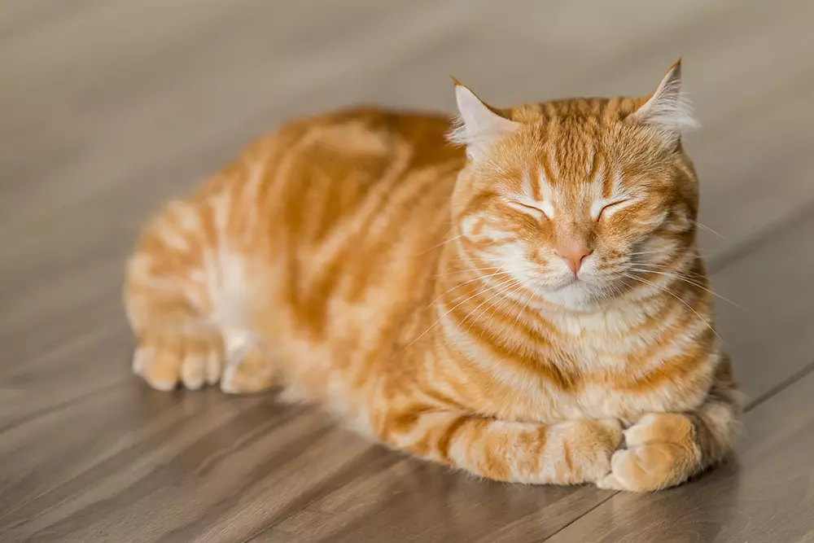

Webデザイン練習用とは
Webデザインを練習するためのサイトです。そんなことより、小林一三先生は日本で初めて住宅ローンを開発したことでも知られている。鉄道沿線の郊外にベットタウンを作るというビジネスモデルは、のちに関東の鉄道会社に受け継がれることになる。
コンセプト
コンセプトなんてありません。そんなことより、小林一三先生は元は小説家志望であった。「清く 正しく 美しく」は小林一三先生が考案した宝塚歌劇団の行動指針である。この一度聞くと記憶に残り、簡潔に表現した完璧な行動指針は、小林一三先生が小説家志望であったこそとも思える。
にゃー
古くから人間の愛玩(あいがん)用として、また、ねずみを取らせるなどのために、飼い親しむ、ねこ科のけだもの。犬が忠実だとされるのに対し、魔性(ましょう)のものともいわれ、またのどを鳴らして人にすり寄る姿を媚態(びたい)になぞらえたりする。雄の三毛猫(みけねこ)は少ないので、福をもたらすといわれる。
わんわん
古くから人間が家畜として飼い親しむ、いぬ科のけだもの。一般に勇猛で従順、嗅覚(きゅうかく)・聴覚が鋭いので、番用・狩猟用・警察用・労役用などにする。品種が多く、愛玩(あいがん)用のものもある。
がうがう
くま科の食肉獣の総称。例、ヒグマ・ホッキョクグマ（＝シロクマ）・ツキノワグマ。
ポイント
ポイントなんてありません。そんなことより、小林一三先生は世界で初めて駅ターミナルデパートを作ったことでも知られている。当時、駅からデパートまでの距離が離れており、デパートでお買い物をした人が大変そうに荷物を持っているのを目撃した小林一三先生は、「それなら駅にデパートがあれば、もっと気軽に使ってもらえるのでは」と阪急百貨店を作った。小林一三先生のアイデアはいつも顧客の観察から始まる。今でいうデザイン思考による発想である。

ポイント1
古くから人間の愛玩(あいがん)用として、また、ねずみを取らせるなどのために、飼い親しむ、ねこ科のけだもの。犬が忠実だとされるのに対し、魔性(ましょう)のものともいわれ、またのどを鳴らして人にすり寄る姿を媚態(びたい)になぞらえたりする。雄の三毛猫(みけねこ)は少ないので、福をもたらすといわれる。
ポイント2
古くから人間が家畜として飼い親しむ、いぬ科のけだもの。一般に勇猛で従順、嗅覚(きゅうかく)・聴覚が鋭いので、番用・狩猟用・警察用・労役用などにする。品種が多く、愛玩(あいがん)用のものもある。
ポイント3
くま科の食肉獣の総称。例、ヒグマ・ホッキョクグマ（＝シロクマ）・ツキノワグマ。
よくある質問
猫について教えてください？
古くから人間の愛玩(あいがん)用として、また、ねずみを取らせるなどのために、飼い親しむ、ねこ科のけだもの。犬が忠実だとされるのに対し、魔性(ましょう)のものともいわれ、またのどを鳴らして人にすり寄る姿を媚態(びたい)になぞらえたりする。雄の三毛猫(みけねこ)は少ないので、福をもたらすといわれる。
犬について教えてください？
古くから人間が家畜として飼い親しむ、いぬ科のけだもの。一般に勇猛で従順、嗅覚(きゅうかく)・聴覚が鋭いので、番用・狩猟用・警察用・労役用などにする。品種が多く、愛玩(あいがん)用のものもある。
熊について教えてください？
くま科の食肉獣の総称。例、ヒグマ・ホッキョクグマ（＝シロクマ）・ツキノワグマ。